Software Introduction
The software we use in the Observation and Server room are crucial to the flow of the casino. It is
imperative
to learn these
thoroughly, through and through, so we can ensure proper function of all equipment at all time. At the end
of
the day, we need
to be confident that nothing will fail overnight.
Avigilon Control Center Client
-Found on most computers in observation room
-access simply by choosing the site (IslandView) that auto-populates in the corner, and log in with basic
Operator credentials
 -On the dropdown to the left, all the devices will populate. By dragging them to the main screen, or
double-clicking, you can view the live image from that camera.
-In the top left next to “live” will be a button for “recorded”, where you will be able to search through
the devices memory of video.
-Next to the that is a button where you can select how many screens you want open for camera viewing, and
the format of how they lay.
-Full screen
-Cycle View →
-Save View → captures the current screens in the view and saves them as a preset
-Collaborate → share views with another individual on a separate client
-In the top left corner of the image below, the three bars indicate the “New Task Menu”
which includes: alarms, searching, exporting, and management of the site
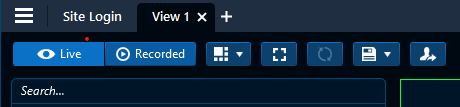
-In the top right above the image windows, there is a tool bar, as shown below.
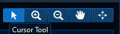
-the arrow represents a point/click cursor
-zoom in and out with your cursor
-the hand is for dragging your view of the images to focus on different things
-the 4th icon represents PTZ controls
-if a camera has ptz capabbility, you can use this button to bring up the PTZ controller
-clicking on the screen and dragging the cursor in the middle will move the PTZ, you can also zoom in and
out, even with the scroller on your mouse
-when view video, you can double-click the screen to activate full screen.
Another option is to use the icons in the corner of the image
-the leftmost icon is an alarm activation button
-next is the snapshot icon, where you can screenshot the image and export it
-the next icon is to mak the current view fullscreen
-the ‘X’ is for closing the viewing window
-When right clicking on the view window, it will bring you up a number of functions shown below
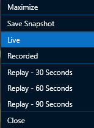
-On the dropdown to the left, all the devices will populate. By dragging them to the main screen, or
double-clicking, you can view the live image from that camera.
-In the top left next to “live” will be a button for “recorded”, where you will be able to search through
the devices memory of video.
-Next to the that is a button where you can select how many screens you want open for camera viewing, and
the format of how they lay.
-Full screen
-Cycle View →
-Save View → captures the current screens in the view and saves them as a preset
-Collaborate → share views with another individual on a separate client
-In the top left corner of the image below, the three bars indicate the “New Task Menu”
which includes: alarms, searching, exporting, and management of the site
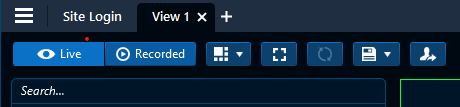
-In the top right above the image windows, there is a tool bar, as shown below.
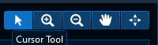
-the arrow represents a point/click cursor
-zoom in and out with your cursor
-the hand is for dragging your view of the images to focus on different things
-the 4th icon represents PTZ controls
-if a camera has ptz capabbility, you can use this button to bring up the PTZ controller
-clicking on the screen and dragging the cursor in the middle will move the PTZ, you can also zoom in and
out, even with the scroller on your mouse
-when view video, you can double-click the screen to activate full screen.
Another option is to use the icons in the corner of the image
-the leftmost icon is an alarm activation button
-next is the snapshot icon, where you can screenshot the image and export it
-the next icon is to mak the current view fullscreen
-the ‘X’ is for closing the viewing window
-When right clicking on the view window, it will bring you up a number of functions shown below
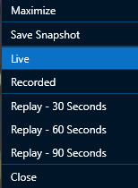
-On the dropdown to the left, all the devices will populate. By dragging them to the main screen, or
double-clicking, you can view the live image from that camera.
-In the top left next to “live” will be a button for “recorded”, where you will be able to search through
the devices memory of video.
-Next to the that is a button where you can select how many screens you want open for camera viewing, and
the format of how they lay.
-Full screen
-Cycle View →
-Save View → captures the current screens in the view and saves them as a preset
-Collaborate → share views with another individual on a separate client
-In the top left corner of the image below, the three bars indicate the “New Task Menu”
which includes: alarms, searching, exporting, and management of the site
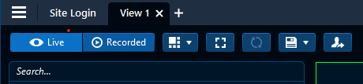
-In the top right above the image windows, there is a tool bar, as shown below.
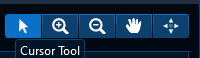
-the arrow represents a point/click cursor
-zoom in and out with your cursor
-the hand is for dragging your view of the images to focus on different things
-the 4th icon represents PTZ controls
-if a camera has ptz capabbility, you can use this button to bring up the PTZ controller
-clicking on the screen and dragging the cursor in the middle will move the PTZ, you can also zoom in and
out, even with the scroller on your mouse
-when view video, you can double-click the screen to activate full screen.
Another option is to use the icons in the corner of the image
-the leftmost icon is an alarm activation button
-next is the snapshot icon, where you can screenshot the image and export it
-the next icon is to mak the current view fullscreen
-the ‘X’ is for closing the viewing window
-When right clicking on the view window, it will bring you up a number of functions shown below
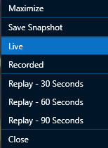
Recorded Video
Appearance Search
-new to us feature that greatly affects the way we can find people
Appearance search is found in the New Task menu". When you click Appearance Search, a new window will
populate
Starting at the top you have your three search items: what are you searching for?
You can search for the appearance of an individual, car or an individual using an image
Appearance analytics only work for analytic-capable digital cameras. The model number will have a “A” at the
end of the first portion of the sequence.
The sequence for searching is as follows:
1. In the New Task menu , click Appearances .
2. Select the person or vehicle icon.
3. Select the icons that best represent the person or vehicle description.
-using gender, hair color and age, and clothing colors
4. Click Date Range to set the date and time of your search.
5. Click Cameras to select the cameras you want to include in the search. By default, all cameras
enabled with the Avigilon Appearance Search feature are selected.
6. Click Search.
The sequence is the same for vehicle searching.
after you click “search”, a number of thumbnails will populate on the screen with what they think best
matches your description of the indivdual or vehicle.
you'll notice the bottom timeline has turned into a graph of the search results, per time. The higher the
bar, the closer of a match it is.(should be)
when you move your cursor over any thumbnail, two options appear. A maginifying glass and star
magnifying glass represents “zooming” in on the thumbnail directly where the expected match is found
clicking the star will tell the system that “this is what i am looking for” and will further refine the
search results to match the starred thumbnail
on the timeline below, a “star” icon will reveal where the starred image appears within the range of time
you are searching between and will also show you the confidence level
with a thumbnail, if you expand it, you can see a Bounding Box around the person or vehicle you have
searched for.
Youi can click on the subject within, and more options will appear as shown:
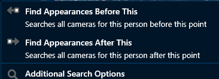
-this will refine and designate the system to only search within the parameter of your choice.
Events Search
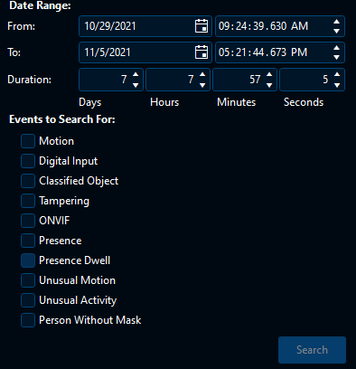
Motion — Motion was detected in the target area.
Digital Input — A signal was sent from a device.
Classified Object — A person or vehicle was detected in the configured region of interest.
Tampering — An unexpected change in the scene was detected.
ONVIF — A third-party ONVIF device event was detected.
Presence or Presence Dwell — The Avigilon Presence Detector sensor detected an individual.
Unusual Motion — Unusual pixel motion was detected.
Unusual Activity — A classified object behaving unusually was detected.
Face Watch List Match — A watch list match was detected.
Person Without Mask — A person without a face mask was detected
-Search through specific date and time ranges for any of the above events
Motion Search
-Motion search is similar to the other search types
-You choose specific cameras and times of where you are looking for motion
-you can choose “Classified Object Motion” or “Pixel Motion”
-you can choose how long an object needs to be in a frame before considering it a search result
-Pixel Search will highlight (if applied) any pixels that show movement within a designated area
Thumbnail Search
-Thumbnail search allows you to choose specific cameras, select a time and date range and the
system
will display thumbnails of images at specific times.
-Comes in use especially when looking for changes in a shot, when an item was dropped, left or placed,
etc..
-When you find a thumbnail you are looking for you can choose to ‘step in’ to it, and will show you
more
thumbnails at a more defined time. This makes it easy to narrow down to when an event occured.
Alarm Search
-Searching Alarms gives you the ability to find when an alarm event occured. You choose which alarms you
want to search through, and choose a period of time to search through.
If there are any results, they will populate above the rimeline.
-You can see specifically what the incident was.
-It shows you the image from the camera that is linked to the alarm
-You can see specific details about the time and which alarm it is.
-You can choose a number of actions to use when you find the event you are searching for as shown below
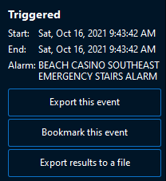
Bookmark Search
-Allows you to search through a time period to look for any bookmarks that may have been created.
-Bookmarks are generally used to save a key image, or a time of an image
Exporting Footage